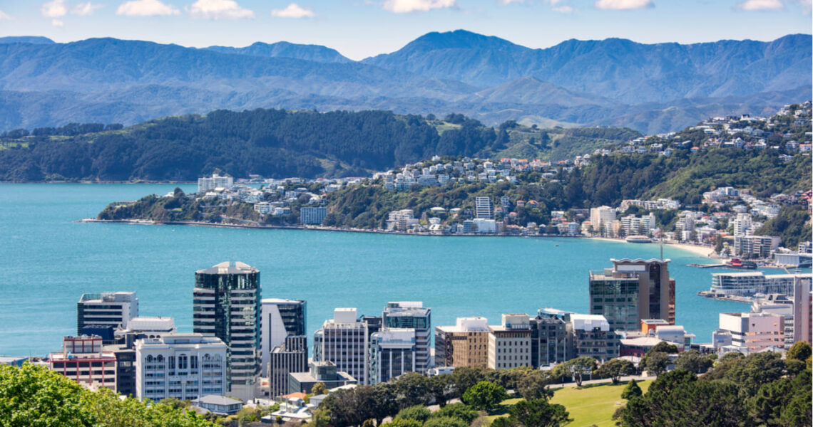
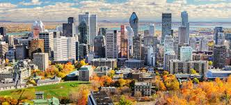

Places
Helo

New Zealand
Forest
New Zealand has a dazzling wealth of breathaking scenary, friendly and fun-loving people, plenty of things to see and do, mouthwatering food and wine and vibe that is unlike anywhere else in the word.

Canada
City
The expanse of Canda's natural beauty, from mountains and glaciers to secluded lakes and forests, is most unparalleled worldwide.